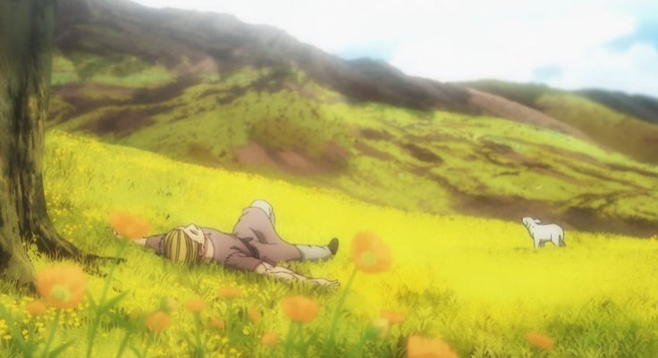
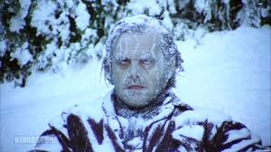

Huey: "Grandad, what do you do when you can't do nothing, but there's nothing you can do?"
Grandad: "You do what you can."
I am a second gereation immigrant born in Seattle but of East African descent. Over the break I had a road trip to California where we explored popular areas like San Fransico and landmarks such as Yosemite.

This picture is from the anime "Vinland Saga".

This picture is from the movie "The Shining".
Huey: "Grandad, what do you do when you can't do nothing, but there's nothing you can do?"
Grandad: "You do what you can."